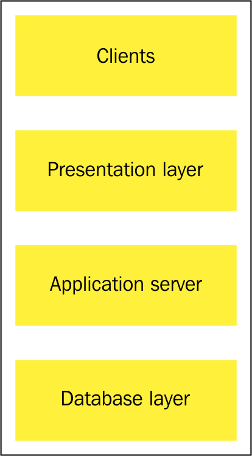

Chapter 3 – How DevOps Affects Architecture
1. What is Software Architecture?
Software architecture is about how a system is structured:
- What parts it has
- How those parts talk to each other
- How easy it is to change, deploy, and scale
In DevOps, we care less about what the software does and more about:
- How fast we can deploy changes
- How safely we can deploy changes
Example
- Functional requirement: “The system should process credit card payments.”
- Non-functional requirement: “The system should process 1,000 payments per second.”
👉 DevOps mainly influences non-functional requirements.
2. DevOps Requirements on Architecture
DevOps and Continuous Delivery (CD) demand two things:
- Small changes should be deployable frequently
- Deployments should be safe and predictable
👉 Ideally:
- A developer fixes a small issue
- The fix goes to production quickly
- Rollbacks are rare, not normal
3. The Monolithic Architecture Problem
What is a Monolith?
A monolith is a system where:
- Everything is bundled into
- one big application
- Frontend, backend, static pages, and logic are all together
Example Problem
You want to fix one spelling mistake on a website
But the whole application is packed as one big Java archive
So you must:
- Rebuild everything
- Redeploy everything
- Risk breaking the whole system
Why this is bad for DevOps?
- A tiny change feels dangerous
- You must test and verify the entire system
- High stress, slow deployments, higher risk
👉 Monoliths slow down Continuous Delivery
4. Key Design Rule: Separation of Concerns
Proposed by Edsger Dijkstra
Different responsibilities should be kept separate.
Related Concepts
- Cohesion : Things inside a module should belong together
- Coupling : Modules should depend on each other as little as possible
✔ High cohesion
✔ Low coupling
👉 This makes systems:
- Easier to understand
- Easier to change
- Easier to deploy
5. Why the Monolith Fails This Rule
In the spelling-mistake example:
- Frontend + backend + database were tightly bound
- No separation
- One small change affected everything
If the frontend was separately deployable, the change would be:
The Twelve-Factor App
The Twelve-Factor App is a set of best practices for building modern, cloud-ready,
and DevOps-friendly applications. It was created by developers at Heroku after
observing patterns from building and deploying hundreds of real-world applications.
Many of these principles are not new. They reflect ideas from classic software engineering wisdom,
such as The Mythical Man-Month, but adapted to modern environments involving cloud computing,
containers, and Continuous Delivery (CD).
The goal of the Twelve-Factor methodology is to make applications:
- Easy to deploy
- Easy to scale
- Reliable in production
- Portable across environments
Factor 1 – Codebase
One source, many environments
An application should have one codebase tracked in a version control system
such as Git. This single codebase can be deployed to multiple environments such as development,
testing, staging, and production.
Having multiple codebases for the same application leads to confusion, duplication, and errors.
Example: One Git repository deployed as dev, test, and prod with different configurations.
Factor 2 – Dependencies
Clearly list what the app needs
All application dependencies should be explicitly declared and isolated.
The application must not rely on software being pre-installed on the system.
This ensures that the application behaves the same way everywhere.
Example: Using Maven, npm, pip, or Docker to package dependencies.
Factor 3 – Configuration
Keep settings outside code
Configuration should be stored outside the application code, usually in environment
variables or external configuration files.
This allows the same application binary to be used across environments without modification.
Example: Database passwords stored as environment variables, not hard-coded.
Factor 4 – Backing Services
Databases/services are replaceable
Backing services such as databases, message queues, or caches should be treated as
attached resources that can be easily replaced.
The application should not assume a specific backing service instance.
Example: Switching from a local database to a cloud database by changing a URL.
Factor 5 – Build, Release, Run
Don’t change code at runtime
The application lifecycle must be divided into three strictly separated stages:
- Build: Compile and package the code
- Release: Combine build with configuration
- Run: Execute the application
Code must never be modified at runtime.
Factor 6 – Processes
No user state inside app
Applications should run as stateless processes. Any data that needs to persist
must be stored in backing services such as databases.
Statelessness enables easy scaling and recovery.
Example: User sessions stored in Redis instead of application memory.
Factor 7 – Port Binding
App exposes itself via a port
Applications should expose their services by binding to a port, rather than relying on
external web servers.
This makes applications self-contained and portable.
Example: A Spring Boot or Node.js app listening on port 8080.
Factor 8 – Concurrency
Scale using multiple processes
Applications should scale by running multiple process instances rather than using complex
threading models.
This approach is simpler and more reliable in distributed systems.
Example: Running multiple Docker containers behind a load balancer.
Factor 9 – Disposability
Apps should start/stop quickly
Applications should start quickly and shut down gracefully. This improves system robustness
and enables fast scaling and recovery.
Processes should be treated as disposable.
Factor 10 – Dev/Prod Parity
Dev and prod should look alike
Development, testing, staging, and production environments should be as similar as possible.
This reduces bugs that appear only in production.
Example: Using Docker locally and in production.
Factor 11 – Logs
Logs are streams, not files
Logs should be treated as event streams. The application should simply write logs
to standard output.
Log storage and analysis should be handled by the execution environment.
Example: Docker logs collected by ELK stack or cloud logging tools.
Factor 12 – Admin Processes
Run admin jobs like normal apps
Administrative tasks such as database migrations or cleanup jobs should be run as
one-off processes using the same codebase and environment as the application.
This ensures consistency and avoids version mismatch issues.
Example: Running a database migration script using the same Docker image.
👉 All these help fast, safe deployments
Conclusion
The Twelve-Factor App principles strongly support DevOps and Continuous Delivery by promoting
modularity, automation, portability, and reliability. Applications built following these
principles are easier to deploy, scale, monitor, and maintain.
For official documentation, visit:
https://12factor.net/
7. Three-Tier Architecture
This splits the system into three layers:

1️⃣ Presentation Tier
- UI layer
- Example: React / Angular
- Handles what users see
2️⃣ Logic Tier
- Business logic
- Example: Java, Python
- Processes requests
3️⃣ Data Tier
- Database
- Example: PostgreSQL
Why DevOps Likes This?
- Each layer can be deployed separately
- Smaller, safer changes
⚠ But:
- If layers are tightly coupled, it becomes a hidden monolith
8. Handling Database Migrations
Databases are different from application binaries because they store both structure (schema) and data (state).
While application code can usually be stopped, replaced, and restarted, a database cannot be casually replaced because it contains valuable and persistent data.
Key Points
- Database = Structure + State
- Structure: tables, columns, constraints
- State: actual business data (customers, orders, transactions)
- Schema changes = version changes
- Each schema modification creates a new database version
- Versions must be tracked carefully
- Database migration tools
- Used to manage schema evolution safely
Common tools:
- Liquibase (Java)
- Flyway (Java)
- Migratus (Clojure)
- Alembic (Python)
How Migration Tools Work (Common Pattern)
- A metadata table is added to track schema versions
- Schema changes are written as versioned change sets
- Tool checks which changes are already applied
- Only missing migrations are executed
Rolling Upgrades (Zero / Low Downtime)
- Used when downtime is unacceptable
- Upgrade database incrementally
- Keep schema backward compatible
- Upgrade application servers one by one
- Remove old schema only after all servers are updated
Key Takeaway
- Database changes must be planned, versioned, and backward-compatible
- They cannot be treated like normal application updates.
Why You Cannot Just Replace a Database Like an App Binary
Simple Explanation
When you update an application binary:
- You stop the application
- Replace the old version with a new one
- Start the application again
The application usually works immediately because its state (data) is stored elsewhere, typically in a database.
A database is fundamentally different.
1. Databases Contain State (Important Data)
An application binary:
- Contains only code
- Is stateless
A database:
- Contains years of business data
- Losing or corrupting it can destroy the business
👉 You cannot simply “delete and redeploy” a database.
2. Schema Changes Affect Existing Data
Changing a database schema:
- Directly impacts stored data
- May break existing applications
- Often cannot be reversed easily
Example:
name → first_name + last_name
If done incorrectly, data can become:
- Lost
- Misinterpreted
- Inconsistent
---
3. Databases Are Shared Resources
- Multiple services may depend on the same database
- Updating the schema for one service can inadvertently break others
- Careful coordination and backward/forward compatibility planning are required
4. Downtime Is Expensive
- Stopping a database means:
- Entire system outage
- User impact
- Revenue loss
Hence:
- Rolling upgrades
- Backward-compatible changes
- Careful sequencing
5. Rollback Is Hard
- Rolling back app code = easy
- Rolling back database changes = risky or impossible
Once data is migrated:
- Old structure may no longer exist
- Data transformations may not be reversible
An application binary is stateless and replaceable, but a database is stateful and persistent—therefore database upgrades must be carefully versioned, migrated, and coordinated rather than simply replaced.
9. Microservices
What are Microservices?
Microservices is an architectural style where an application is built as a collection of
small, independent services. Each service focuses on a single business capability
and runs as a separate process.
- Each service has its own codebase and often its own database
- Services communicate using lightweight protocols such as HTTP/JSON
- Each service can be developed, tested, deployed, and scaled independently
Why DevOps Loves Microservices
Microservices align well with DevOps principles because they reduce coupling and increase
delivery speed.
-
Faster deployments:
Small services mean smaller code changes, enabling frequent and safer releases.
-
Smaller failures:
A failure in one service usually does not bring down the entire system.
-
Easier rollback:
Only the affected service needs to be rolled back instead of the whole application.
⚠ Challenges of Microservices
While microservices offer flexibility, they also introduce operational complexity.
-
More services → more failures possible:
A distributed system has many moving parts, increasing the chances of network issues,
partial failures, and latency problems.
-
Needs monitoring and automation:
Effective logging, monitoring, alerting, and automated deployment pipelines are essential
to manage and operate microservices reliably.
In practice, microservices succeed only when combined with strong DevOps practices such as
CI/CD, containerization, orchestration, and observability.
10. Conway’s Law (Very Important)
Software structure reflects team structure
Conway’s Law states that the way an organization is structured will inevitably be reflected
in the software systems it builds. Communication paths between teams strongly influence
system architecture.
Example
In a traditional organization, teams are often divided by function:
- Database team
- Backend team
- Frontend team
Because each team works in isolation and communicates through formal handoffs, the resulting
software usually mirrors this separation, leading to a rigid three-tier architecture:
- Presentation layer (Frontend)
- Business logic layer (Backend)
- Data layer (Database)
While this structure is clear, it often causes:
- Slow delivery due to inter-team dependencies
- Blame shifting instead of shared responsibility
- Difficult troubleshooting across layers
DevOps Goal
DevOps challenges this model by promoting cross-functional teams that can deliver
features end-to-end without heavy coordination overhead.
Each team owns:
- Code – design, development, and testing
- Deployment – CI/CD pipelines and releases
- Operations – monitoring, scaling, and incident response
This ownership creates faster feedback loops, better accountability, and more resilient systems.
👉 Microservices architecture fits this model well because each service can be owned,
developed, deployed, and operated by a single team independently.
In short: If you want loosely coupled, scalable systems, you must first build
loosely coupled, well-communicating teams.
11. Service Compatibility (Tolerant Reader Pattern)
Problem
In distributed systems, services are developed and deployed independently.
Over time, requirements change and services must evolve by adding or modifying
data fields. This creates a challenge when different versions of services
need to communicate with each other.
If a service consumer expects an exact data structure, even small changes
in the response can cause failures and break compatibility.
Solution: Tolerant Reader Pattern
The Tolerant Reader Pattern solves this problem by making service
consumers flexible in how they read data.
- Consumers ignore unknown fields in incoming messages
- Consumers only process the fields they actually need
At the same time:
- Producers can safely add new fields to responses
- Older consumers continue to work without changes
Why This Matters
This approach enables:
- Independent service evolution
- Backward compatibility
- Zero-downtime deployments
- Reduced coordination between teams
Best Fit Technologies
This pattern works best with:
JSON is naturally flexible:
- Extra fields can be added without breaking existing clients
- Most JSON parsers ignore unknown attributes by default
SOAP Comparison
SOAP services are typically defined using strict schemas (WSDL and XSD).
Any change in the message structure often requires:
- Regenerating client code
- Coordinated deployments
- Versioned endpoints
As a result, SOAP-based systems are:
- Stricter
- Slower to evolve
- Less suitable for rapid, independent service changes
In summary: The Tolerant Reader Pattern allows services to evolve
safely by making consumers flexible, enabling faster development and
more resilient distributed systems.
12. Microservices and Databases
Two options:
- Each service has its own database
- Better isolation
- Easier independent deployment
- Shared database
- Easier data modeling
- Harder to evolve safely
👉 No single correct answer
13. DevOps, Architecture & Resilience
But also Challenges:
- Monitoring
- Health-check APIs
- Load balancers
- Automation
Example:
- If a service fails → remove it automatically
Big Picture Summary
DevOps changes architecture by:
- Encouraging modularity
- Avoiding monoliths
- Making systems easy to deploy
- Treating databases as versioned code
- Promoting microservices
- Emphasizing monitoring and resilience
- 👉 Good architecture makes DevOps possible
- 👉 Bad architecture makes DevOps painful